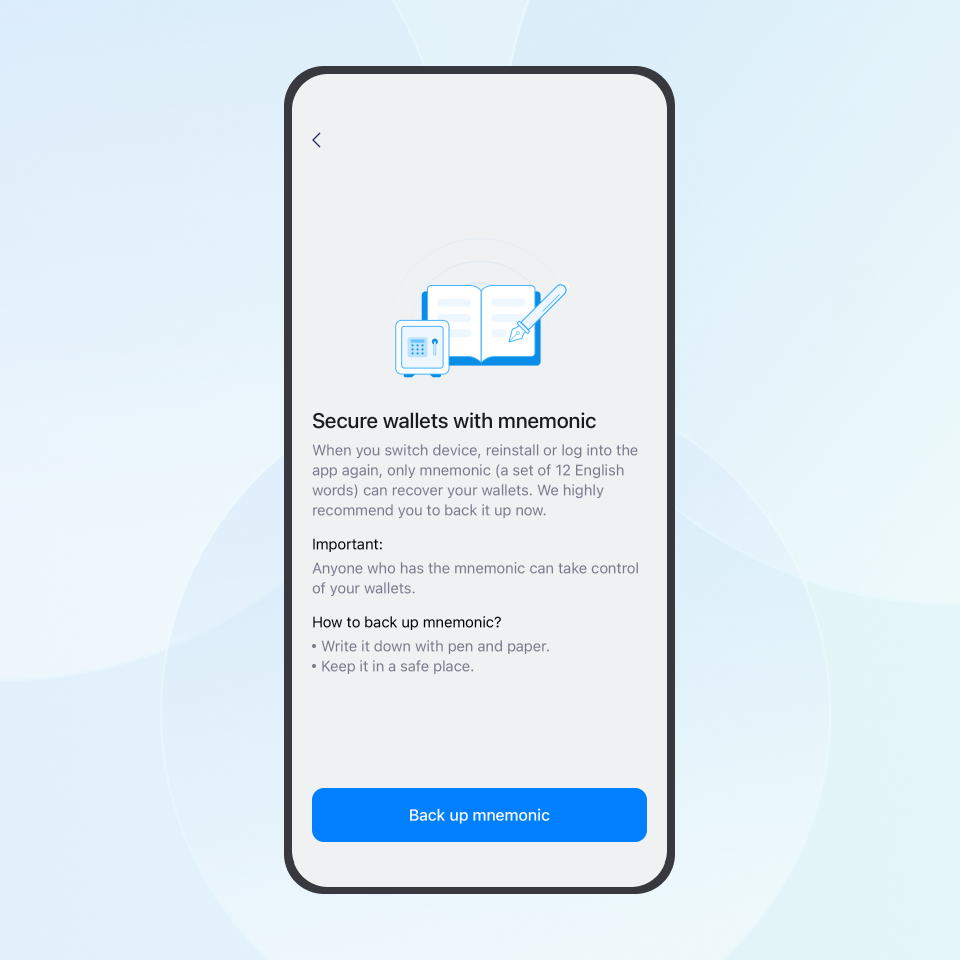
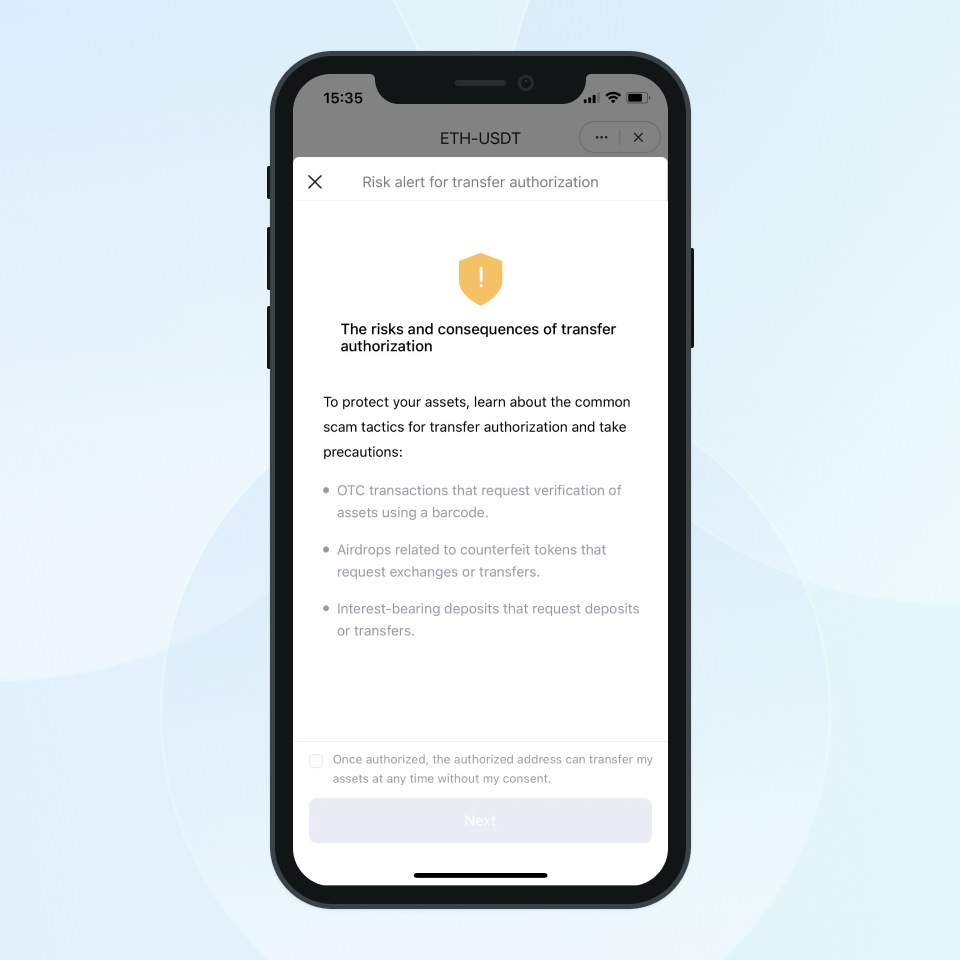

imToken is a blockchain wallet with rigorous security audits and sophisticated risk control measures to safeguard user tokens. As a decentralized wallet, imToken does not store sensitive information of its users. Users are in sole possession of their private keys and have exclusive control over their tokens. Sole possession also helps users cultivate strong security awareness and exercise caution when making transactions.
An unauthorized transaction means a potential compromise of your private key. In this case, please remain calm and follow the steps below.
Step 1: Transfer the remaining tokens in your wallet
imToken is a self-custodial wallet, and unlike banks, it cannot freeze your wallet account or that of the person who stole your funds. So when you discover that tokens have been stolen, check if there are any tokens left in all your wallets on imToken. If so, transfer the remaining tokens to a secure wallet address or exchange account ASAP.
Step 2: Examine the cause and gather clues
There are two main causes of token theft.
- Compromised mnemonic, private key or keystore.
- Unconsciously grant scammers the transfer authorization, which allows them to transfer your tokens.
Please note that in the above two cases, the thieves can transfer your tokens without knowing your wallet password.
Cause #1: Compromised mnemonic, private key or keystore
When you create a wallet with imToken, you will see the reminder “Anyone who has the mnemonic can take control of your wallets”. This means that if your mnemonic is compromised, someone else can transfer your tokens without knowing your wallet password.

Common causes of compromise:
- Download a fake imToken App from a fake website or unofficial channel.
- Copy of the mnemonic was seen by someone close to you.
- Take a screenshot/photo of the mnemonic and save it in your phone album.
- Save the mnemonic in WeChat, memo, mailbox, computer folder, notebook or USB stick.
- Send the mnemonic by email or instant message tools.
- Enter the mnemonic into third-party websites or other wallets.
- Import the mnemonic generated by a third-party risk wallet into imToken.
- Import the mnemonic generated by imToken into a third-party risk wallet.
- Copy and paste the mnemonic, etc.
Why can someone transfer your tokens without knowing your wallet password?
imToken is a self-custodial wallet that can be used to manage mnemonics, private keys and keystores, but does not store your tokens. Your tokens are stored on the blockchain, not within imToken, and the amount of tokens you see in your wallet is the data that imToken pulls from the blockchain.
The mnemonic represents the ownership of the token you own on the blockchain. Once someone else has access to your mnemonic, they can log into your wallet on another device and set a different password to steal your tokens. Blockchain allows users to have full control over their tokens, however, this also means that they are solely responsible for their tokens.
Cause #2: Unconsciously grant scammers the transfer authorization
Scammers often trick users to access third-party websites through the imToken browser to obtain the transfer authorization, which allows them to transfer your tokens without your permission.
To help users to stay alert, the latest version of imToken has optimized the risk warning when users grant transfer authorization.

If you give authorization to a malicious third party, you are actually granting the scammer permission to transfer your tokens, and he can steal your tokens without knowing your mnemonic and password.
The common ways for scammers to obtain authorization are: scam token airdrop, fake liquidity mining and QR code payment.
Scam token airdrop
Scammers airdrop tokens to your address, and the token information contains false content to lure you to access a third-party website for exchange, thus fraudulently obtaining transfer authorization.
Fake liquidity mining
Scammers impersonate imToken officials on channels such as Telegram, WhatsApp, Youtube etc. and offer you a very good investment opportunity: Deposit USDTs into imToken and participate in liquidity mining or staking to get guaranteed daily earnings, the more tokens you deposit, the higher the rate of return.
When you confirm a transaction on the scam website to start the so-called liquidity mining or staking, you are actually giving the transfer authorization to the scammer.
Note: The DApp browser in imToken is an open portal that allows you to open a third-party website from imToken. It does not mean that imToken has a partnership with these projects.
QR code payment
Scammers lure you to scan a QR code or click a link, which opens a scam website mimicking the transfer page of your wallet App. The site takes you through an imitation of the familiar transfer interface and obtains your transfer authorization.
If you want to check the authorization status of your wallet, please refer to this blog My USDT was sent out from my wallet without my consent. How did that happen?
Step 3: File a police report
Go to your local police station to file a report. Transactions cannot be reversed or frozen on blockchain, so the only way to retrieve your money is to file a police report and ask them to find out the scammer. If the police have any questions, please contact us by sending an email to [email protected].
Q&A
How to check whether the imToken App downloaded is fake or not?
If you haven't uninstalled imToken on your phone, you can check it by comparing the SHA256 of the imToken APK file with the string stated on our official website. If they are the same, it means you downloaded a genuine imToken.
Related reading: How to verify the authenticity of the imToken App
How to keep my tokens safe?
- Make sure that the imToken App downloaded is from our official website https://token.im
- Store the mnemonic through physical media, including writing it down on paper or storing the mnemonic through the imKey mnemonic secret box.
- Know about common digital token frauds to stay alert
Learn more: How to keep your assets safe?